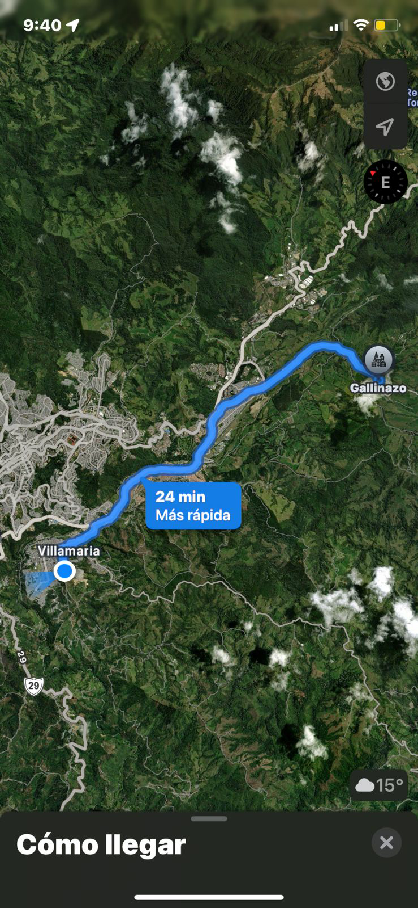

La vereda Gallinazo se asienta a 2.350 m s. n. m. en la vertiente
nororiental de Villamaría, entre la Reserva Forestal Río Blanco y el límite
con Manizales. Fundada hacia 1910 como caserío minero, hoy cuenta con
aproximadamente 412 habitantes distribuidos en 103 viviendas. Su
privilegiada altura ofrece temperaturas frescas de páramo bajo y paisajes
montañosos cubiertos por bosques y pastizales. La economía combina
ganadería lechera de altura, agricultura diversificada (papa,
hortalizas) y un creciente turismo de naturaleza: senderos
interpretativos por humedales, avistamiento de más de 340 especies de aves
y miradores sobre el cañón del río Blanco. Sin embargo, el rápido avance
de la expansión urbana de Manizales plantea retos de conservación y
ordenamiento ambiental.

Miraflores
Ubicada a 23 km de Villamaría, la vereda Miraflores disfruta de un
clima templado entre 17 y 18 °C gracias a su altitud de 1.500–1.600 m s. n. m.
Su nombre evoca la riqueza de cartuchos, azucenas y otras flores
silvestres que colorean sus laderas. Sus cerca de 288 habitantes
cultivan café de alta calidad, plátano y una variada huerta de hortalizas y
frutales, complementando la crianza de aves y cerdos. Dos quebradas —Las
Dantas y San Juan— enmarcan el territorio y nutren microcuencas de agua
cristalina. Miradores rurales, fincas cafetaleras con procesos de
beneficio artesanal y rutas de ciclomontañismo convierten a Miraflores en
un destino ideal para el turismo panorámico y experiencias agroturísticas.
Floresta
Situada al nor-occidente de Villamaría y a pocos minutos del casco urbano,
la vereda La Floresta hace honor a su nombre con cultivos de flores
ornamentales que le han valido al municipio el apelativo de «Jardín de
Colombia». A unos 1.900 m s. n. m., esta zona hortofrutícola media
alberga alrededor de 500 habitantes y 105 viviendas. Los suelos fértiles
producen café, hortalizas de clima medio y exuberantes cultivos florales
(crisantemos, astromelias). Tres quebradas —Tejares, La Floresta y La
María— surcan el paisaje y sostienen nacimientos de agua usados para
consumo y riego. Sus rutas rurales permiten caminatas familiares entre
cultivos, visitas a fincas turísticas como Mandalay y La Alquería, y
miradores naturales con vistas privilegiadas de la Cordillera Central.
Contacto
¿Te interesa conocer más sobre estas veredas o programar una visita guiada? Escríbenos: